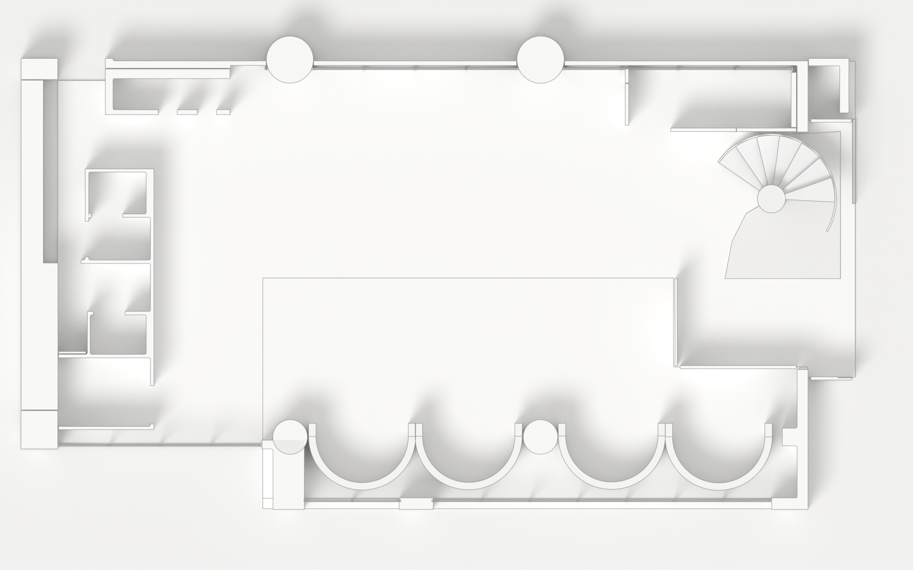
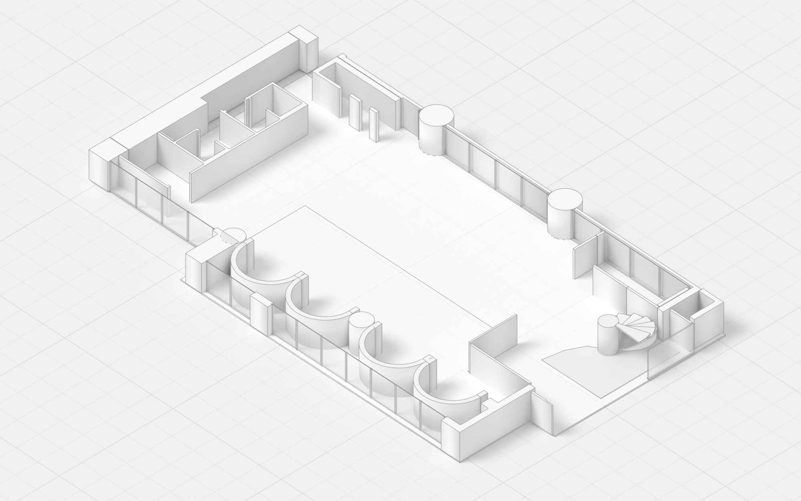
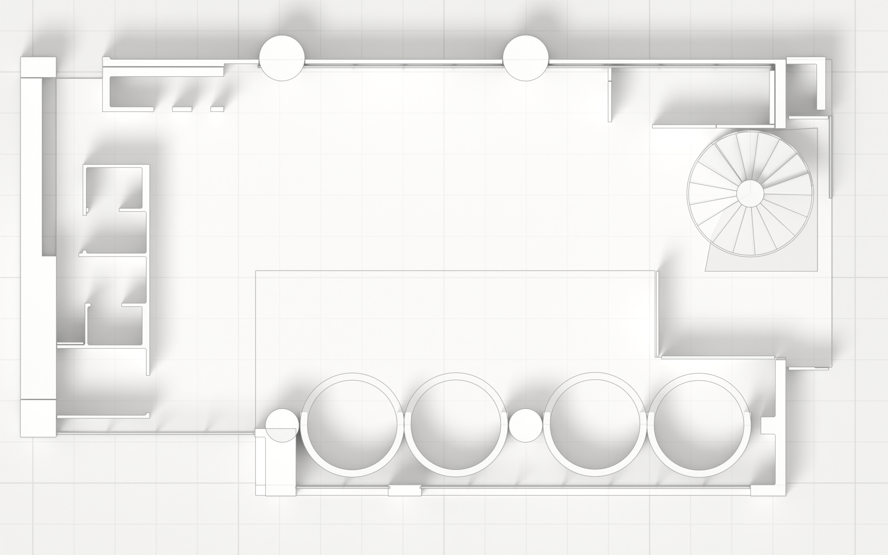
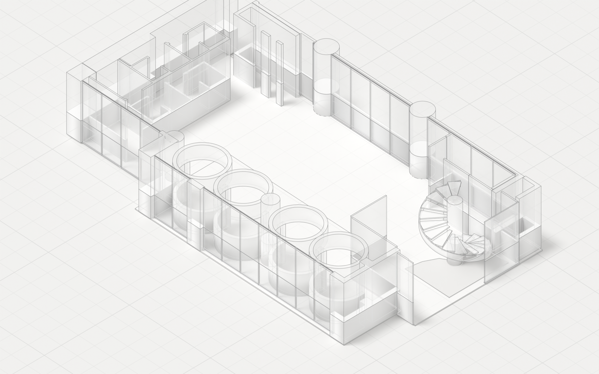
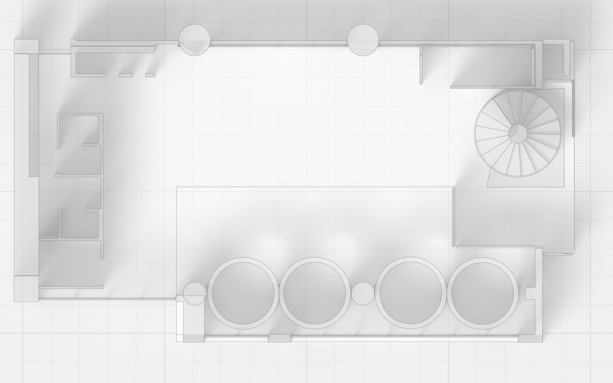
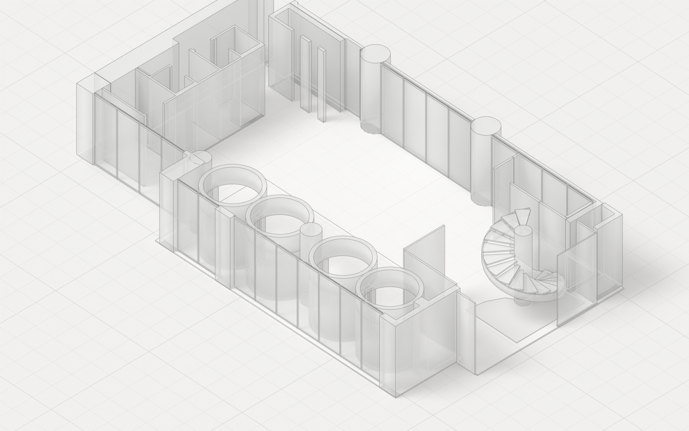
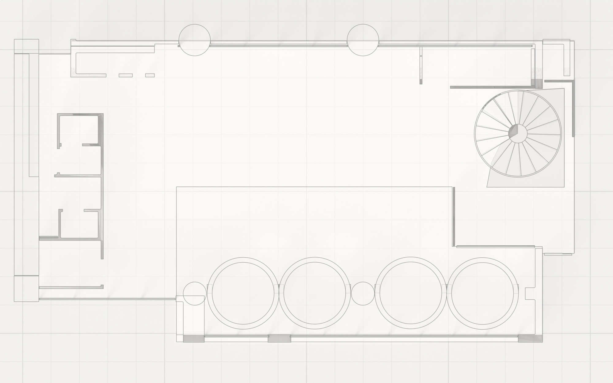
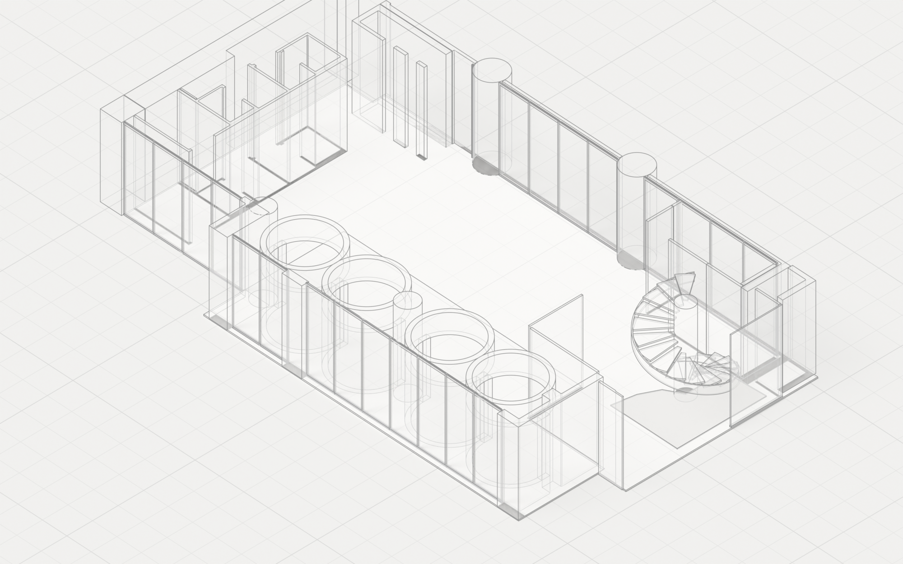

Restaurant · floor1 · étape 2 : le style blanc, vu du haut et en 3D
24/11/2026 · la coque de l'étape 1, sans mobilier
Tu imaginais un style blanc, avec une grille, un peu transparent, et deux points de vue : une vue du
haut, et une vue 3D vers laquelle on bascule. Voici cinq variantes, chacune dans les deux vues. Les deux vues ont le même
cadre, au format 16:10 d'une tablette. Le soleil reste fixe, comme il le sera dans l'application : seule la caméra bouge.
1 · Blanc
Les murs pleins, coupés à 1,20 m, avec des ombres douces et des contours gris. C'est la plus lisible vue du haut. En 3D, elle ressemble à une maquette.

Vue du haut
Vue 3D
2 · Blanc sur grille
La même, posée sur une grille au mètre, avec un trait plus marqué tous les 5 m. La grille donne l'échelle et l'air d'une carte. Elle s'efface au loin.
Vue du haut

Vue 3D
3 · Fantôme
Le bas des murs est plein jusqu'à 1,20 m, le haut est presque invisible, comme du verre dépoli. On garde la lecture de plan de la 1 et on voit en plus le volume de la salle : façades, poteaux, anneaux des tambours.

Vue du haut

Vue 3D
4 · Transparent
Toute la hauteur en blanc translucide, avec les arêtes cachées en gris clair. On voit à travers tout.

Vue du haut

Vue 3D
5 · Fil de fer
Seulement les arêtes : les arêtes visibles en gris foncé, les arêtes cachées en gris clair. C'est un dessin technique, très léger.

Vue du haut

Vue 3D
Passer de la vue du haut à la vue 3D
variante 3 · la caméra se penche et tourne de 45° en 1,5 s · la vidéo : rendus/3-styles-blancs/passage-dessus-3d-fantome.mp4
0,00 s
0,38 s
0,75 s
1,12 s
1,50 s
Mon avis
Je retiendrais la 3, le fantôme, sur la grille. Vue du haut, elle se lit comme un plan : les
tables et leurs couleurs d'état ressortiront sur les murs bas, pleins et blancs. En 3D, elle garde le volume de la salle
sans cacher les tables. La 4 et la 5 sont belles à vide, mais avec le mobilier, les arêtes vues par transparence vont
s'empiler et brouiller la carte. La 1 et la 2 sont les plus sobres, mais la vue 3D y perd la hauteur de la salle.
La source : LAIR Restaurant & Bar
ArchDaily · les plans d'ArchDaily sont identiques à floor1, floor2, floor3, 3d-1 et 3d-2
Architectes
RENESA Architecture Design Interiors Studio (architecte principal : Sanchit Arora)
Le vrai lieu est un speakeasy sombre, en métal, en pierre et en pavés de verre. Pour la carte, on garde
sa géométrie exacte, mais on la redessine en blanc. Les 37 photos sont dans recherche/11-lair-archdaily. Elles
serviront à modéliser juste le bar, les banquettes, l'escalier et le mobilier.
17 · La banquette dans un tambour : dossier courbe, bandeau de pierre éclairé, table ronde sur pied, suspension.
24 · Le haut du tambour est un anneau de métal suspendu au-dessus de la banquette.
33 · Deux tambours de face, avec le poteau entre les deux.
3 · L'escalier hélicoïdal en métal sombre, et les façades en pavés de verre.
4 · Au pied de l'escalier, un jardin de pierres : c'est la zone de gravier du plan.
6 · Le bar et son étagère rétroéclairée.
Ce que les photos ont changé dans le modèle : le haut des tambours est maintenant ouvert. C'est un
anneau suspendu (photo 24), et la banquette reste visible depuis la vue du haut.
Questions
Quelle variante retiens-tu ? On peut aussi en mélanger deux, par exemple le fantôme sur la grille, ou le blanc avec le fil de fer en 3D seulement.
Pour la vue du haut, le plan est tourné pour remplir l'écran d'une tablette posée à l'horizontale : le bar à gauche, l'entrée à droite, la rue en bas. Ça te va ?
Ensuite, je modélise les éléments fixes d'après les photos : le bar, les banquettes dans les tambours, l'escalier en détail, les pavés de verre et le jardin de pierres. Puis viendra le mobilier. On continue comme ça ?